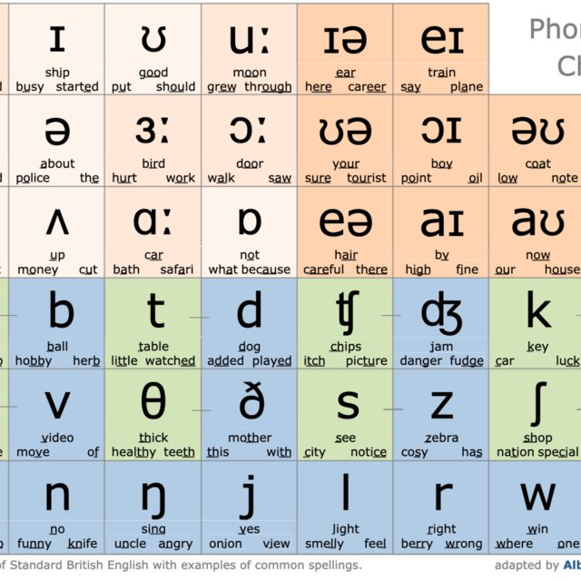

LA TABLA FONETICA
DEFINICIÓN
La fonología es el estudio de los patrones y combinaciones de sonidos en una lengua. Mientras que la fonética se encarga de describir cómo se producen los sonidos físicamente (articulación, acústica, etc.), la fonología se enfoca en la función de estos sonidos dentro de un sistema lingüístico.
CARACTERISTICAS
FONEMA:
Son las unidades mínimas de sonido que cambian el significado de una palabra. Por ejemplo, en inglés, los sonidos /p/ y /b/ son fonemas diferentes porque cambian el significado entre palabras como "pat" y "bat". Los fonemas no siempre corresponden directamente a un sonido físico (esto lo cubre la fonética), sino que son abstracciones que el cerebro usa para diferenciar significados.
ALÓFONOS:
Son las variantes fonéticas de un fonema que no cambian el significado de una palabra. Por ejemplo, el sonido /p/ en "spin" y "pin" suena ligeramente diferente, pero sigue siendo interpretado como el mismo fonema /p/.
DISCTRIBUCIÓN Y COMPLEMENTARIAS LIBRES:
La distribución complementaria ocurre cuando los alófonos de un fonema aparecen en diferentes contextos específicos y nunca se superponen. Por ejemplo, en inglés, la /p/ aspirada en "pin" y la /p/ no aspirada en "spin" aparecen en diferentes contextos. La distribución libre significa que diferentes alófonos pueden aparecer en el mismo contexto sin cambiar el significado de la palabra.
SÍLABAS Y ESTRUCTURA SILÁBICAS:
Las sílabas son importantes en fonología porque los sonidos no ocurren de manera aislada. Cada lengua tiene reglas sobre cómo se pueden combinar los sonidos en sílabas. En inglés, por ejemplo, una sílaba puede tener una consonante inicial (C), una vocal (V), y una consonante final (C), como en "cat" (CVC).
PROSODIA:
La prosodia incluye elementos como el acento, la entonación y el ritmo. En inglés, la entonación y el acento pueden cambiar el significado de una oración, como en las preguntas y declaraciones. Además, el acento de una palabra puede cambiar su significado (por ejemplo, "record" como sustantivo o verbo dependiendo del acento).
ACA TIENES UN VIDEO DE FONÉTICA
DICCIONARIOS PARA LA PRONUNCIACIÓN DEL IDIOMA